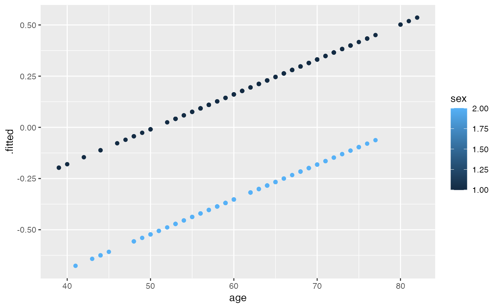
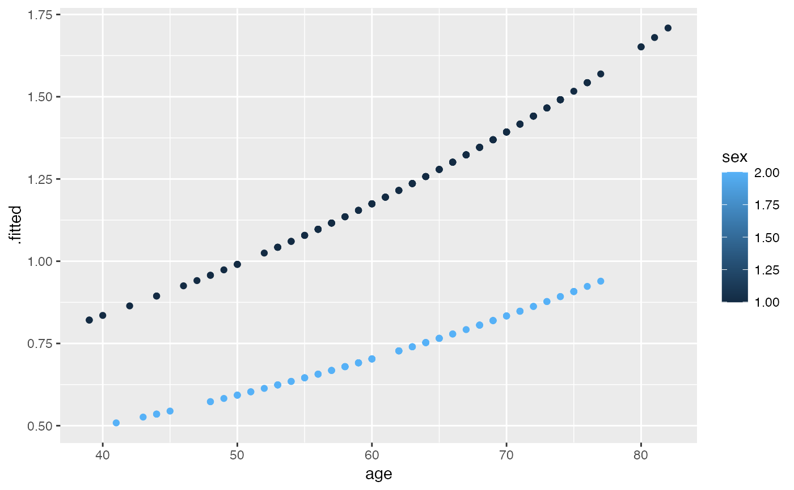
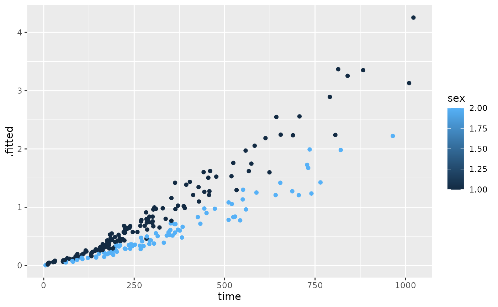

Tidy summarizes information about the components of a model. A model component might be a single term in a regression, a single hypothesis, a cluster, or a class. Exactly what tidy considers to be a model component varies across models but is usually self-evident. If a model has several distinct types of components, you will need to specify which components to return.
# S3 method for coxph tidy(x, exponentiate = FALSE, conf.int = FALSE, conf.level = 0.95, ...)
| x | A |
|---|---|
| exponentiate | Logical indicating whether or not to exponentiate the
the coefficient estimates. This is typical for logistic and multinomial
regressions, but a bad idea if there is no log or logit link. Defaults
to |
| conf.int | Logical indicating whether or not to include a confidence
interval in the tidied output. Defaults to |
| conf.level | The confidence level to use for the confidence interval
if |
| ... | Additional arguments. Not used. Needed to match generic
signature only. Cautionary note: Misspelled arguments will be
absorbed in |
Other coxph tidiers:
augment.coxph(),
glance.coxph()
Other survival tidiers:
augment.coxph(),
augment.survreg(),
glance.aareg(),
glance.cch(),
glance.coxph(),
glance.pyears(),
glance.survdiff(),
glance.survexp(),
glance.survfit(),
glance.survreg(),
tidy.aareg(),
tidy.cch(),
tidy.pyears(),
tidy.survdiff(),
tidy.survexp(),
tidy.survfit(),
tidy.survreg()
A tibble::tibble() with columns:
The estimated value of the regression term.
The two-sided p-value associated with the observed statistic.
The value of a T-statistic to use in a hypothesis that the regression term is non-zero.
The standard error of the regression term.
#> # A tibble: 2 x 5 #> term estimate std.error statistic p.value #> <chr> <dbl> <dbl> <dbl> <dbl> #> 1 age 0.0170 0.00922 1.85 0.0646 #> 2 sex -0.513 0.167 -3.06 0.00218#> # A tibble: 2 x 5 #> term estimate std.error statistic p.value #> <chr> <dbl> <dbl> <dbl> <dbl> #> 1 age 1.02 0.00922 1.85 0.0646 #> 2 sex 0.599 0.167 -3.06 0.00218lp <- augment(cfit, lung) risks <- augment(cfit, lung, type.predict = "risk") expected <- augment(cfit, lung, type.predict = "expected") glance(cfit)#> # A tibble: 1 x 18 #> n nevent statistic.log p.value.log statistic.sc p.value.sc statistic.wald #> <int> <dbl> <dbl> <dbl> <dbl> <dbl> <dbl> #> 1 228 165 14.1 0.000857 13.7 0.00105 13.5 #> # … with 11 more variables: p.value.wald <dbl>, statistic.robust <dbl>, #> # p.value.robust <dbl>, r.squared <dbl>, r.squared.max <dbl>, #> # concordance <dbl>, std.error.concordance <dbl>, logLik <dbl>, AIC <dbl>, #> # BIC <dbl>, nobs <int># also works on clogit models resp <- levels(logan$occupation) n <- nrow(logan) indx <- rep(1:n, length(resp)) logan2 <- data.frame( logan[indx, ], id = indx, tocc = factor(rep(resp, each = n)) ) logan2$case <- (logan2$occupation == logan2$tocc) cl <- clogit(case ~ tocc + tocc:education + strata(id), logan2) tidy(cl)#> # A tibble: 9 x 5 #> term estimate std.error statistic p.value #> <chr> <dbl> <dbl> <dbl> <dbl> #> 1 toccfarm -1.90 1.38 -1.37 1.70e- 1 #> 2 toccoperatives 1.17 0.566 2.06 3.91e- 2 #> 3 toccprofessional -8.10 0.699 -11.6 4.45e-31 #> 4 toccsales -5.03 0.770 -6.53 6.54e-11 #> 5 tocccraftsmen:education -0.332 0.0569 -5.84 5.13e- 9 #> 6 toccfarm:education -0.370 0.116 -3.18 1.47e- 3 #> 7 toccoperatives:education -0.422 0.0584 -7.23 4.98e-13 #> 8 toccprofessional:education 0.278 0.0510 5.45 4.94e- 8 #> 9 toccsales:education NA 0 NA NA#> # A tibble: 1 x 18 #> n nevent statistic.log p.value.log statistic.sc p.value.sc statistic.wald #> <int> <dbl> <dbl> <dbl> <dbl> <dbl> <dbl> #> 1 4190 838 666. 1.90e-138 682. 5.01e-142 414. #> # … with 11 more variables: p.value.wald <dbl>, statistic.robust <dbl>, #> # p.value.robust <dbl>, r.squared <dbl>, r.squared.max <dbl>, #> # concordance <dbl>, std.error.concordance <dbl>, logLik <dbl>, AIC <dbl>, #> # BIC <dbl>, nobs <int>